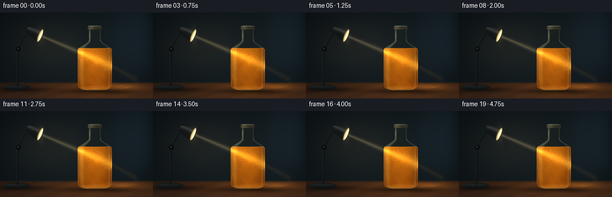
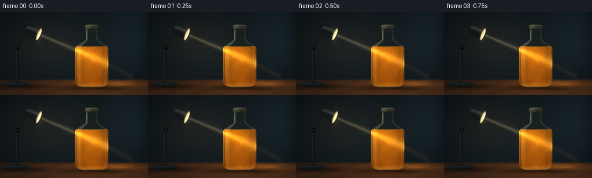

CODING AGENTS AS PIXEL WORLD MODELS
traex/GPT-6.1-Sol · phygen_050
点击播放 · 原生 RGB 像素
逐轮保存的候选
回放视频、检查图与代码变化。
每份候选均可单独播放。实际图片检查记录在下方工具轨迹中。
候选 01播放与检查图
点击播放 · 原生 RGB 像素


展开代码变化
--- 上一保存版本
+++ 本次保存版本
@@ -0,0 +1,260 @@
+"""Procedural, supersampled RGB study of a reading light and pulpy orange juice."""
+from pathlib import Path
+import json
+import numpy as np
+from PIL import Image, ImageDraw, ImageFilter
+import artifact_io
+
+ROOT = Path(__file__).resolve().parent
+SPEC = json.loads((ROOT/'task_spec.json').read_text())
+S = 4
+W,H=SPEC['width'],SPEC['height']
+y,x=np.mgrid[0:H*S,0:W*S].astype(np.float32)/S
+rng=np.random.default_rng(50)
+
+def smooth(a,b,v):
+ q=np.clip((v-a)/(b-a),0,1)
+ return q*q*(3-2*q)
+
+def gauss(cx,cy,rx,ry):
+ return np.exp(-0.5*((x-cx)/rx)**2-0.5*((y-cy)/ry)**2)
+
+def layer(im,col,mask):
+ a=np.clip(mask,0,1)[...,None]
+ im[:]=im*(1-a)+np.asarray(col)*a
+
+def add(im,col,mask):
+ im[:]+=np.asarray(col)*mask[...,None]
+
+def shape(points,blur=0):
+ m=Image.new('L',(W*S,H*S))
+ d=ImageDraw.Draw(m)
+ d.polygon([(int(a*S),int(b*S)) for a,b in points],fill=255)
+ if blur: m=m.filter(ImageFilter.GaussianBlur(blur*S))
+ return np.asarray(m,dtype=np.float32)/255
+
+def line(points,width,blur=0):
+ m=Image.new('L',(W*S,H*S));d=ImageDraw.Draw(m)
+ d.line([(int(a*S),int(b*S)) for a,b in points],fill=255,width=max(1,int(width*S)),joint='curve')
+ if blur:m=m.filter(ImageFilter.GaussianBlur(blur*S))
+ return np.asarray(m,dtype=np.float32)/255
+
+def ellipse(cx,cy,ra,rb,angle=0):
+ a=np.linspace(0,2*np.pi,180)
+ return shape(list(zip(cx+ra*np.cos(a)*np.cos(angle)-rb*np.sin(a)*np.sin(angle),cy+ra*np.cos(a)*np.sin(angle)+rb*np.sin(a)*np.cos(angle))))
+
+# Dark study, softly lit, with a warm fine-grained wooden desktop.
+base=np.zeros((H*S,W*S,3),np.float32)
+base[:]=[11,17,20]
+add(base,[9,12,13],gauss(120,67,100,70))
+add(base,[7,11,14],gauss(223,38,27,57))
+add(base,[12,7,2],gauss(86,56,47,31))
+# A very out-of-focus background panel, not an identifiable distracting object.
+add(base,[2,5,7],np.exp(-((x-238)/13)**4)*smooth(100,80,y)*.4)
+horizon=smooth(115,120,y)
+woodnoise=(np.sin(x*.13+y*.45)+.45*np.sin(x*.39+y*.85)+.23*np.sin(x*1.8+y*2.1))
+wood=np.zeros_like(base)
+wood[:]=[47,30,20]
+wood+=((y-118)/27)[...,None]*np.array([12,8,5])
+wood+=woodnoise[...,None]*np.array([2.1,1.45,.85])
+# Long, low contrast perspective grain.
+grain=np.sin(y*3.3+.022*x+1.8*np.sin(x*.021))
+wood+=grain[...,None]*np.array([1.6,1.0,.6])
+layer(base,wood,horizon)
+add(base,[44,22,5],gauss(170,126,67,14)*horizon)
+layer(base,[11,8,6],gauss(166,132,39,3.3)*.78)
+layer(base,[13,10,8],gauss(33,129,31,3)*.72)
+# Lamp weighted base, rear arm, and adjustable hinge.
+basefoot=ellipse(28,125,23,5)
+layer(base,[17,20,21],basefoot)
+add(base,[15,17,17],gauss(23,123.5,21,2)*basefoot)
+layer(base,[53,56,54],line([(7,124.8),(16,122),(35,121.8),(48,124)],.6)*.55)
+arm=line([(29,123),(30,86),(30.5,61),(39,43),(49,29)],3.7)
+layer(base,[18,21,21],arm)
+layer(base,[57,61,58],line([(28,121),(28.8,84),(29.2,61),(37.8,43),(47.9,28)],.65)*.66)
+layer(base,[9,13,14],ellipse(30.7,61,4,4))
+layer(base,[64,67,62],ellipse(30.2,60.4,1.35,1.35)*.7)
+layer(base,[23,27,27],ellipse(49,29,4,4))
+# Lamp conical hood with metal side shading.
+direction=np.array([.921,.390]);normal=np.array([-.390,.921])
+rear=np.array([44.5,29.0]);mouth=np.array([67.,38.5])
+hood=shape([rear-normal*5,rear+normal*5,mouth+normal*11.6,mouth-normal*11.6])
+lampshade=np.zeros_like(base);lampshade[:]=[21,24,24]
+shadeband=np.exp(-((y-(.423*(x-44.5)+24))/3.4)**2)
+lampshade+=shadeband[...,None]*np.array([34,35,32])
+layer(base,lampshade,hood)
+layer(base,[67,69,64],line([rear-normal*5,mouth-normal*11.6],.55)*.7)
+# Rim ellipse seen obliquely; the bright recessed reading-lamp emitter.
+angle=np.arctan2(direction[1],direction[0])
+rim=ellipse(67,38.5,3.1,11.7,angle)
+layer(base,[85,80,65],rim)
+opening=ellipse(67.4,38.7,2.5,10.7,angle)
+layer(base,[217,195,128],opening)
+inner=ellipse(68.2,39,1.6,8.6,angle)
+layer(base,[255,245,199],inner)
+add(base,[24,20,11],gauss(68,39,4,9))
+
+# Smooth glass bottle silhouette, rounded shoulder and thick heel.
+cx=158.5
+radius=np.where(y<46,10.4,10.4+18.5*smooth(46,63,y))
+radius=np.where(y>118,28.9-.4*smooth(118,123,y),radius)
+radius=np.where(y>123,28.5*np.sqrt(np.clip(1-((y-123)/8.1)**2,0,1)),radius)
+outer=smooth(-.20,.20,radius-np.abs(x-cx))*(y>=27)*(y<=131.1)
+u=(x-cx)/np.maximum(radius,.01)
+edge=np.clip(np.abs(u),0,1)
+thick=np.sqrt(np.clip(1-u*u,0,1))
+liquidtop=59.2+.55*(1-np.minimum(np.abs((x-cx)/28),1)**2)
+liquid=outer*smooth(liquidtop-.12,liquidtop+.18,y)*(y<129.3)
+# Bottle rim/heel masks computed once.
+leftedge=np.exp(-((x-(cx-radius+1.15))/.58)**2)*outer
+rightedge=np.exp(-((x-(cx+radius-1.05))/.48)**2)*outer
+broadleft=np.exp(-((u+.76)/.12)**2)*outer
+broadright=np.exp(-((u-.84)/.052)**2)*outer
+# Particle seeds: pulp, not glitter, softly settling and carried by weak currents.
+n=680
+px=rng.uniform(131,186,n);py=rng.uniform(60.5,127.6,n)
+pr=rng.uniform(.11,.46,n);phase=rng.uniform(0,2*np.pi,n)
+brightness=rng.uniform(.35,1,n)
+# Tiny bubbles only in the headspace/near meniscus.
+bubblex=rng.uniform(135,180,13);bubbley=rng.uniform(65,120,13)
+# Stable fine density noise plus evolving broad mixing curls.
+fixednoise=(np.sin(x*1.87+y*2.64)+np.sin(x*3.47-y*1.8)+.5*np.sin(x*7.45+y*4.3))/2.5
+
+def frame(t):
+ im=base.copy()
+ # A shaft has very soft edges; there is enough haze to trace it to the bottle.
+ beamline=38.8+.423*(x-68)
+ dist=y-beamline
+ entry=smooth(68,74,x)*(1-smooth(127,133,x))
+ airbeam=np.exp(-.5*(dist/(1.55+.025*np.maximum(x-68,0)))**2)*entry
+ add(im,[72,61,37],airbeam*.62)
+ add(im,[32,28,19],np.exp(-.5*(dist/.7)**2)*entry*.42)
+ # Faint dust in the shaft supports the real beam rather than a painted stripe.
+ for j in range(17):
+ dx=77+j*3.0+1.5*np.sin(.36*t+j)
+ dy=38.8+.423*(dx-68)+2.1*np.sin(j*4.7+.24*t)
+ add(im,[62,51,29],gauss(dx,dy,.18,.18)*.43)
+ # Glass headspace transmits the dim background and catches reflected lamp light.
+ glasscol=np.zeros_like(im);glasscol[:]=[22,27,24]
+ glasscol+=thick[...,None]*np.array([9,10,6])
+ layer(im,glasscol,outer*.32)
+ add(im,[22,27,23],broadleft*.55*(1-liquid))
+ # Warm volumetric orange-juice body: dim rim, dense orange center.
+ cloud=(np.sin(x*.24+y*.16+.24*t)+.6*np.sin(x*.47-y*.28-.17*t)+.4*np.sin(x*.13-y*.38+.16*t))/2
+ juice=np.zeros_like(im);juice[:]=[69,26,3]
+ juice+=thick[...,None]*np.array([82,47,6])
+ juice+=gauss(141,73,29,45)[...,None]*np.array([25,18,3])
+ juice+=((128-y)/70)[...,None]*np.array([8,9,3])
+ juice+=cloud[...,None]*np.array([4.5,3.3,.65])
+ juice+=fixednoise[...,None]*np.array([1.7,1.0,.2])
+ # Focused light attenuates and spreads as it enters the suspension.
+ depth=np.maximum(x-130,0)
+ spread=2.25+depth*.068
+ internal=np.exp(-.5*(dist/spread)**2)*np.exp(-depth/84)
+ glow=np.exp(-.5*(dist/(9.5+depth*.1))**2)*np.exp(-depth/69)
+ juice+=glow[...,None]*np.array([51,32,4])
+ juice+=internal[...,None]*np.array([94,87,26])
+ # Fine moving refracted filaments. Small ripples of density create branching
+ # warmer and paler eddies around the shaft, always confined to the liquid.
+ wav=1.75*np.sin(x*.21+.42*t)+.9*np.sin(x*.48-.53*t)
+ filament=np.exp(-((dist-wav)/.38)**2)
+ filament2=np.exp(-((dist+3.2+1.4*np.sin(x*.18-.36*t))/.50)**2)
+ caustic=(filament*.56+filament2*.40)*np.exp(-depth/86)
+ caustic*=.55+.45*np.sin(x*.39-y*.23+.27*t)**2
+ juice+=caustic[...,None]*np.array([34,29,13])
+ # Denser curls and striations are very subtle away from the illuminated core.
+ curl=np.sin(x*.29+y*.19+2*np.sin(y*.09+.2*t)-.24*t)
+ juice+=curl[...,None]*glow[...,None]*np.array([5,3,1])
+ layer(im,juice,liquid)
+ # Pulp is visible at different optical depths, moving only a few pixels.
+ # Render into a transparent high-resolution overlay then clip to the fluid.
+ pm=Image.new('RGBA',(W*S,H*S),(0,0,0,0));pd=ImageDraw.Draw(pm)
+ for j in range(n):
+ a=px[j]+1.1*np.sin(.36*t+phase[j])+.45*np.sin(py[j]*.12+.32*t)
+ b=py[j]+.17*t+.65*np.cos(.3*t+phase[j])
+ if b>127.7:b-=66
+ local_d=b-(38.8+.423*(a-68))
+ exposure=np.exp(-.5*(local_d/8.5)**2)
+ alpha=int((18+105*exposure)*brightness[j])
+ r=pr[j];elong=1.1+.6*np.sin(phase[j])**2
+ color=(255,206+int(exposure*21),83+int(exposure*46),alpha)
+ pd.ellipse(((a-r)*S,(b-r*elong)*S,(a+r)*S,(b+r*elong)*S),fill=color)
+ arr=np.asarray(pm).astype(np.float32)
+ layer(im,arr[...,:3],arr[...,3]/255*liquid)
+ # Scattered small bubble rims, subdued enough to read as fluid, not fizz.
+ bm=Image.new('RGBA',(W*S,H*S),(0,0,0,0));bd=ImageDraw.Draw(bm)
+ for j in range(len(bubblex)):
+ a=bubblex[j]+.4*np.sin(t*.28+j)
+ b=bubbley[j]-.16*t
+ rr=.28+.08*(j%3)
+ bd.ellipse(((a-rr)*S,(b-rr)*S,(a+rr)*S,(b+rr)*S),outline=(251,201,113,42),width=1)
+ ba=np.asarray(bm).astype(np.float32)
+ layer(im,ba[...,:3],ba[...,3]/255*liquid)
+ # Concave meniscus and illuminated top surface.
+ surface=np.exp(-((y-liquidtop)/.52)**2)*outer
+ add(im,[51,34,11],surface*.65)
+ add(im,[14,12,5],ellipse(cx,59.65,27.8,1.4)*.3)
+ # Lens-like brightness along glass walls, nonuniform specular lines.
+ add(im,[60,61,43],leftedge*(.50+.45*gauss(135,73,12,31)))
+ add(im,[66,62,38],rightedge*(.30+.55*gauss(185,92,8,27)))
+ add(im,[52,47,23],broadleft*(.36+.43*gauss(139,78,6,27)))
+ add(im,[36,43,39],broadright*.50)
+ # A thin white reflection runs down only part of the front left glass.
+ highlightx=cx-radius+3.8
+ hi=np.exp(-((x-highlightx)/.42)**2)*outer*smooth(43,56,y)*(1-smooth(103,123,y))
+ add(im,[86,86,66],hi*.68)
+ # Rounded shoulder highlights.
+ sh=np.exp(-((np.abs(x-cx)-(radius-1.1))/.8)**2)*outer*smooth(43,47,y)*(1-smooth(60,64,y))
+ add(im,[38,41,30],sh*.64)
+ # Thick glass bottom and a faint amber reflection below it.
+ heel=ellipse(cx,126.6,26.1,3.45)
+ add(im,[26,27,16],heel*outer*.55)
+ lowerline=line([(cx-22+44*z,129.1+1.15*np.sin(np.pi*z)) for z in np.linspace(0,1,100)],.56)
+ add(im,[68,62,37],lowerline*.65)
+ add(im,[21,31,28],ellipse(cx,127.9,24.8,1.45)*.30)
+ # Ribbed cap closes the glass neck: dark satin metal catches warm light.
+ cap=shape([(146.9,23.7),(148,22.1),(168.8,22.1),(170.3,23.7),(170.1,28.8),(147.2,28.8)])
+ capcol=np.zeros_like(im);capcol[:]=[46,47,37]
+ capcol+=np.exp(-((x-151.5)/6)**2)[...,None]*np.array([33,31,22])
+ capcol+=(np.sin(x*3.9)*3)[...,None]
+ layer(im,capcol,cap)
+ add(im,[25,23,15],ellipse(158.5,22.7,10.7,1.3))
+ layer(im,[112,106,75],line([(148,23.1),(155,22.7),(166.8,23)],.42)*.6)
+ layer(im,[14,20,18],line([(147.4,28.5),(169.7,28.5)],.7)*.7)
+ # Neck thread and shoulder reflections, with no opaque label to obscure light.
+ add(im,[32,34,25],line([(148.4,31),(168.6,31.2)],.38)*.45)
+ add(im,[27,30,22],line([(149,34.4),(168.1,34.7)],.36)*.42)
+ add(im,[49,53,36],gauss(150,38,.65,5)*outer)
+ # The transmitted beam emerges amber and is refracted toward the desktop.
+ exitline=89.5+.54*(x-186)
+ exitmask=smooth(185.5,189,x)*(1-smooth(226,234,x))
+ exitbeam=np.exp(-.5*((y-exitline)/(2.3+.03*np.maximum(x-186,0)))**2)*exitmask
+ add(im,[47,25,5],exitbeam*.36)
+ add(im,[69,42,11],gauss(187.1,89.7,1.7,4.1)*outer)
+ # Golden caustic pool lies on the wood: focused, organically branching arcs.
+ pool=gauss(206,124.6,22,3.8)*horizon
+ add(im,[71,40,9],pool*.60)
+ ripple=np.zeros_like(x)
+ for k in range(6):
+ yy=121.4+k*1.05+.57*np.sin(x*.17+k*1.3+.24*t)+.28*np.sin(x*.40-k+.16*t)
+ ribbon=np.exp(-((y-yy)/(.22+.03*k))**2)
+ ribbon*=np.exp(-((x-(200+k*2))/23)**2)*(.3+.7*np.sin(x*.14+k*.8)**2)
+ ripple+=ribbon
+ add(im,[42,26,5],ripple*horizon*.58)
+ add(im,[21,11,1],gauss(158.5,134,16,2.1))
+ # Optical bloom, subtle film grain and corner falloff finish the photographic image.
+ bright=np.clip((im-181)/74,0,1)
+ bi=Image.fromarray(np.uint8(np.clip(bright*255,0,255)))
+ bloom=np.asarray(bi.filter(ImageFilter.GaussianBlur(1.35*S)),dtype=np.float32)/255
+ im+=bloom*np.array([11,8,3])
+ vignette=np.clip(1-.17*((x-145)/167)**2-.13*((y-77)/108)**2,.72,1)
+ im*=vignette[...,None]
+ # Fine sensor texture kept stable to avoid frame-to-frame flicker.
+ im+=fixednoise[...,None]*.28
+ img=Image.fromarray(np.uint8(np.clip(im,0,255)))
+ return np.asarray(img.resize((W,H),Image.Resampling.LANCZOS))
+
+if __name__=='__main__':
+ frames=np.stack([frame(i/SPEC['fps']) for i in range(SPEC['frames'])])
+ artifact_io.save(frames,ROOT)
+ print('Saved',frames.shape,frames.dtype,'to',ROOT)
可观测工具轨迹
实际执行的命令与返回图片。
命令 1exit 0
/bin/bash -lc 'ls -la && cat prompt.txt && cat GENERATION_RULES.md && cat task_spec.json'
命令 2exit 0
/bin/bash -lc "cat artifact_io.py && python - <<'PY' import numpy,PIL print(numpy.__version__, PIL.__version__) PY"
命令 3exit 0
/bin/bash -lc "cat > generate.py <<'PY'
\"\"\"Procedural, supersampled RGB study of a reading light and pulpy orange juice.\"\"\"
from pathlib import Path
import json
import numpy as np
from PIL import Image, ImageDraw, ImageFilter
import artifact_io
ROOT = Path(__file__).resolve().parent
SPEC = json.loads((ROOT/'task_spec.json').read_text())
S = 4
W,H=SPEC['width'],SPEC['height']
y,x=np.mgrid[0:H*S,0:W*S].astype(np.float32)/S
rng=np.random.default_rng(50)
def smooth(a,b,v):
q=np.clip((v-a)/(b-a),0,1)
return q*q*(3-2*q)
def gauss(cx,cy,rx,ry):
return np.exp(-0.5*((x-cx)/rx)**2-0.5*((y-cy)/ry)**2)
def layer(im,col,mask):
a=np.clip(mask,0,1)[...,None]
im[:]=im*(1-a)+np.asarray(col)*a
def add(im,col,mask):
im[:]+=np.asarray(col)*mask[...,None]
def shape(points,blur=0):
m=Image.new('L',(W*S,H*S))
d=ImageDraw.Draw(m)
d.polygon([(int(a*S),int(b*S)) for a,b in points],fill=255)
if blur: m=m.filter(ImageFilter.GaussianBlur(blur*S))
return np.asarray(m,dtype=np.float32)/255
def line(points,width,blur=0):
m=Image.new('L',(W*S,H*S));d=ImageDraw.Draw(m)
d.line([(int(a*S),int(b*S)) for a,b in points],fill=255,width=max(1,int(width*S)),joint='curve')
if blur:m=m.filter(ImageFilter.GaussianBlur(blur*S))
return np.asarray(m,dtype=np.float32)/255
def ellipse(cx,cy,ra,rb,angle=0):
a=np.linspace(0,2*np.pi,180)
return shape(list(zip(cx+ra*np.cos(a)*np.cos(angle)-rb*np.sin(a)*np.sin(angle),cy+ra*np.cos(a)*np.sin(angle)+rb*np.sin(a)*np.cos(angle))))
# Dark study, softly lit, with a warm fine-grained wooden desktop.
base=np.zeros((H*S,W*S,3),np.float32)
base[:]=[11,17,20]
add(base,[9,12,13],gauss(120,67,100,70))
add(base,[7,11,14],gauss(223,38,27,57))
add(base,[12,7,2],gauss(86,56,47,31))
# A very out-of-focus background panel, not an identifiable distracting object.
add(base,[2,5,7],np.exp(-((x-238)/13)**4)*smooth(100,80,y)*.4)
horizon=smooth(115,120,y)
woodnoise=(np.sin(x*.13+y*.45)+.45*np.sin(x*.39+y*.85)+.23*np.sin(x*1.8+y*2.1))
wood=np.zeros_like(base)
wood[:]=[47,30,20]
wood+=((y-118)/27)[...,None]*np.array([12,8,5])
wood+=woodnoise[...,None]*np.array([2.1,1.45,.85])
# Long, low contrast perspective grain.
grain=np.sin(y*3.3+.022*x+1.8*np.sin(x*.021))
wood+=grain[...,None]*np.array([1.6,1.0,.6])
layer(base,wood,horizon)
add(base,[44,22,5],gauss(170,126,67,14)*horizon)
layer(base,[11,8,6],gauss(166,132,39,3.3)*.78)
layer(base,[13,10,8],gauss(33,129,31,3)*.72)
# Lamp weighted base, rear arm, and adjustable hinge.
basefoot=ellipse(28,125,23,5)
layer(base,[17,20,21],basefoot)
add(base,[15,17,17],gauss(23,123.5,21,2)*basefoot)
layer(base,[53,56,54],line([(7,124.8),(16,122),(35,121.8),(48,124)],.6)*.55)
arm=line([(29,123),(30,86),(30.5,61),(39,43),(49,29)],3.7)
layer(base,[18,21,21],arm)
layer(base,[57,61,58],line([(28,121),(28.8,84),(29.2,61),(37.8,43),(47.9,28)],.65)*.66)
layer(base,[9,13,14],ellipse(30.7,61,4,4))
layer(base,[64,67,62],ellipse(30.2,60.4,1.35,1.35)*.7)
layer(base,[23,27,27],ellipse(49,29,4,4))
# Lamp conical hood with metal side shading.
direction=np.array([.921,.390]);normal=np.array([-.390,.921])
rear=np.array([44.5,29.0]);mouth=np.array([67.,38.5])
hood=shape([rear-normal*5,rear+normal*5,mouth+normal*11.6,mouth-normal*11.6])
lampshade=np.zeros_like(base);lampshade[:]=[21,24,24]
shadeband=np.exp(-((y-(.423*(x-44.5)+24))/3.4)**2)
lampshade+=shadeband[...,None]*np.array([34,35,32])
layer(base,lampshade,hood)
layer(base,[67,69,64],line([rear-normal*5,mouth-normal*11.6],.55)*.7)
# Rim ellipse seen obliquely; the bright recessed reading-lamp emitter.
angle=np.arctan2(direction[1],direction[0])
rim=ellipse(67,38.5,3.1,11.7,angle)
layer(base,[85,80,65],rim)
opening=ellipse(67.4,38.7,2.5,10.7,angle)
layer(base,[217,195,128],opening)
inner=ellipse(68.2,39,1.6,8.6,angle)
layer(base,[255,245,199],inner)
add(base,[24,20,11],gauss(68,39,4,9))
# Smooth glass bottle silhouette, rounded shoulder and thick heel.
cx=158.5
radius=np.where(y<46,10.4,10.4+18.5*smooth(46,63,y))
radius=np.where(y>118,28.9-.4*smooth(118,123,y),radius)
radius=np.where(y>123,28.5*np.sqrt(np.clip(1-((y-123)/8.1)**2,0,1)),radius)
outer=smooth(-.20,.20,radius-np.abs(x-cx))*(y>=27)*(y<=131.1)
u=(x-cx)/np.maximum(radius,.01)
edge=np.clip(np.abs(u),0,1)
thick=np.sqrt(np.clip(1-u*u,0,1))
liquidtop=59.2+.55*(1-np.minimum(np.abs((x-cx)/28),1)**2)
liquid=outer*smooth(liquidtop-.12,liquidtop+.18,y)*(y<129.3)
# Bottle rim/heel masks computed once.
leftedge=np.exp(-((x-(cx-radius+1.15))/.58)**2)*outer
rightedge=np.exp(-((x-(cx+radius-1.05))/.48)**2)*outer
broadleft=np.exp(-((u+.76)/.12)**2)*outer
broadright=np.exp(-((u-.84)/.052)**2)*outer
# Particle seeds: pulp, not glitter, softly settling and carried by weak currents.
n=680
px=rng.uniform(131,186,n);py=rng.uniform(60.5,127.6,n)
pr=rng.uniform(.11,.46,n);phase=rng.uniform(0,2*np.pi,n)
brightness=rng.uniform(.35,1,n)
# Tiny bubbles only in the headspace/near meniscus.
bubblex=rng.uniform(135,180,13);bubbley=rng.uniform(65,120,13)
# Stable fine density noise plus evolving broad mixing curls.
fixednoise=(np.sin(x*1.87+y*2.64)+np.sin(x*3.47-y*1.8)+.5*np.sin(x*7.45+y*4.3))/2.5
def frame(t):
im=base.copy()
# A shaft has very soft edges; there is enough haze to trace it to the bottle.
beamline=38.8+.423*(x-68)
dist=y-beamline
entry=smooth(68,74,x)*(1-smooth(127,133,x))
airbeam=np.exp(-.5*(dist/(1.55+.025*np.maximum(x-68,0)))**2)*entry
add(im,[72,61,37],airbeam*.62)
add(im,[32,28,19],np.exp(-.5*(dist/.7)**2)*entry*.42)
# Faint dust in the shaft supports the real beam rather than a painted stripe.
for j in range(17):
dx=77+j*3.0+1.5*np.sin(.36*t+j)
dy=38.8+.423*(dx-68)+2.1*np.sin(j*4.7+.24*t)
add(im,[62,51,29],gauss(dx,dy,.18,.18)*.43)
# Glass headspace transmits the dim background and catches reflected lamp light.
glasscol=np.zeros_like(im);glasscol[:]=[22,27,24]
glasscol+=thick[...,None]*np.array([9,10,6])
layer(im,glasscol,outer*.32)
add(im,[22,27,23],broadleft*.55*(1-liquid))
# Warm volumetric orange-juice body: dim rim, dense orange center.
cloud=(np.sin(x*.24+y*.16+.24*t)+.6*np.sin(x*.47-y*.28-.17*t)+.4*np.sin(x*.13-y*.38+.16*t))/2
juice=np.zeros_like(im);juice[:]=[69,26,3]
juice+=thick[...,None]*np.array([82,47,6])
juice+=gauss(141,73,29,45)[...,None]*np.array([25,18,3])
juice+=((128-y)/70)[...,None]*np.array([8,9,3])
juice+=cloud[...,None]*np.array([4.5,3.3,.65])
juice+=fixednoise[...,None]*np.array([1.7,1.0,.2])
# Focused light attenuates and spreads as it enters the suspension.
depth=np.maximum(x-130,0)
spread=2.25+depth*.068
internal=np.exp(-.5*(dist/spread)**2)*np.exp(-depth/84)
glow=np.exp(-.5*(dist/(9.5+depth*.1))**2)*np.exp(-depth/69)
juice+=glow[...,None]*np.array([51,32,4])
juice+=internal[...,None]*np.array([94,87,26])
# Fine moving refracted filaments. Small ripples of density create branching
# warmer and paler eddies around the shaft, always confined to the liquid.
wav=1.75*np.sin(x*.21+.42*t)+.9*np.sin(x*.48-.53*t)
filament=np.exp(-((dist-wav)/.38)**2)
filament2=np.exp(-((dist+3.2+1.4*np.sin(x*.18-.36*t))/.50)**2)
caustic=(filament*.56+filament2*.40)*np.exp(-depth/86)
caustic*=.55+.45*np.sin(x*.39-y*.23+.27*t)**2
juice+=caustic[...,None]*np.array([34,29,13])
# Denser curls and striations are very subtle away from the illuminated core.
curl=np.sin(x*.29+y*.19+2*np.sin(y*.09+.2*t)-.24*t)
juice+=curl[...,None]*glow[...,None]*np.array([5,3,1])
layer(im,juice,liquid)
# Pulp is visible at different optical depths, moving only a few pixels.
# Render into a transparent high-resolution overlay then clip to the fluid.
pm=Image.new('RGBA',(W*S,H*S),(0,0,0,0));pd=ImageDraw.Draw(pm)
for j in range(n):
a=px[j]+1.1*np.sin(.36*t+phase[j])+.45*np.sin(py[j]*.12+.32*t)
b=py[j]+.17*t+.65*np.cos(.3*t+phase[j])
if b>127.7:b-=66
local_d=b-(38.8+.423*(a-68))
exposure=np.exp(-.5*(local_d/8.5)**2)
alpha=int((18+105*exposure)*brightness[j])
r=pr[j];elong=1.1+.6*np.sin(phase[j])**2
color=(255,206+int(exposure*21),83+int(exposure*46),alpha)
pd.ellipse(((a-r)*S,(b-r*elong)*S,(a+r)*S,(b+r*elong)*S),fill=color)
arr=np.asarray(pm).astype(np.float32)
layer(im,arr[...,:3],arr[...,3]/255*liquid)
# Scattered small bubble rims, subdued enough to read as fluid, not fizz.
bm=Image.new('RGBA',(W*S,H*S),(0,0,0,0));bd=ImageDraw.Draw(bm)
for j in range(len(bubblex)):
a=bubblex[j]+.4*np.sin(t*.28+j)
b=bubbley[j]-.16*t
rr=.28+.08*(j%3)
bd.ellipse(((a-rr)*S,(b-rr)*S,(a+rr)*S,(b+rr)*S),outline=(251,201,113,42),width=1)
ba=np.asarray(bm).astype(np.float32)
layer(im,ba[...,:3],ba[...,3]/255*liquid)
# Concave meniscus and illuminated top surface.
surface=np.exp(-((y-liquidtop)/.52)**2)*outer
add(im,[51,34,11],surface*.65)
add(im,[14,12,5],ellipse(cx,59.65,27.8,1.4)*.3)
# Lens-like brightness along glass walls, nonuniform specular lines.
add(im,[60,61,43],leftedge*(.50+.45*gauss(135,73,12,31)))
add(im,[66,62,38],rightedge*(.30+.55*gauss(185,92,8,27)))
add(im,[52,47,23],broadleft*(.36+.43*gauss(139,78,6,27)))
add(im,[36,43,39],broadright*.50)
# A thin white reflection runs down only part of the front left glass.
highlightx=cx-radius+3.8
hi=np.exp(-((x-highlightx)/.42)**2)*outer*smooth(43,56,y)*(1-smooth(103,123,y))
add(im,[86,86,66],hi*.68)
# Rounded shoulder highlights.
sh=np.exp(-((np.abs(x-cx)-(radius-1.1))/.8)**2)*outer*smooth(43,47,y)*(1-smooth(60,64,y))
add(im,[38,41,30],sh*.64)
# Thick glass bottom and a faint amber reflection below it.
heel=ellipse(cx,126.6,26.1,3.45)
add(im,[26,27,16],heel*outer*.55)
lowerline=line([(cx-22+44*z,129.1+1.15*np.sin(np.pi*z)) for z in np.linspace(0,1,100)],.56)
add(im,[68,62,37],lowerline*.65)
add(im,[21,31,28],ellipse(cx,127.9,24.8,1.45)*.30)
# Ribbed cap closes the glass neck: dark satin metal catches warm light.
cap=shape([(146.9,23.7),(148,22.1),(168.8,22.1),(170.3,23.7),(170.1,28.8),(147.2,28.8)])
capcol=np.zeros_like(im);capcol[:]=[46,47,37]
capcol+=np.exp(-((x-151.5)/6)**2)[...,None]*np.array([33,31,22])
capcol+=(np.sin(x*3.9)*3)[...,None]
layer(im,capcol,cap)
add(im,[25,23,15],ellipse(158.5,22.7,10.7,1.3))
layer(im,[112,106,75],line([(148,23.1),(155,22.7),(166.8,23)],.42)*.6)
layer(im,[14,20,18],line([(147.4,28.5),(169.7,28.5)],.7)*.7)
# Neck thread and shoulder reflections, with no opaque label to obscure light.
add(im,[32,34,25],line([(148.4,31),(168.6,31.2)],.38)*.45)
add(im,[27,30,22],line([(149,34.4),(168.1,34.7)],.36)*.42)
add(im,[49,53,36],gauss(150,38,.65,5)*outer)
# The transmitted beam emerges amber and is refracted toward the desktop.
exitline=89.5+.54*(x-186)
exitmask=smooth(185.5,189,x)*(1-smooth(226,234,x))
exitbeam=np.exp(-.5*((y-exitline)/(2.3+.03*np.maximum(x-186,0)))**2)*exitmask
add(im,[47,25,5],exitbeam*.36)
add(im,[69,42,11],gauss(187.1,89.7,1.7,4.1)*outer)
# Golden caustic pool lies on the wood: focused, organically branching arcs.
pool=gauss(206,124.6,22,3.8)*horizon
add(im,[71,40,9],pool*.60)
ripple=np.zeros_like(x)
for k in range(6):
yy=121.4+k*1.05+.57*np.sin(x*.17+k*1.3+.24*t)+.28*np.sin(x*.40-k+.16*t)
ribbon=np.exp(-((y-yy)/(.22+.03*k))**2)
ribbon*=np.exp(-((x-(200+k*2))/23)**2)*(.3+.7*np.sin(x*.14+k*.8)**2)
ripple+=ribbon
add(im,[42,26,5],ripple*horizon*.58)
add(im,[21,11,1],gauss(158.5,134,16,2.1))
# Optical bloom, subtle film grain and corner falloff finish the photographic image.
bright=np.clip((im-181)/74,0,1)
bi=Image.fromarray(np.uint8(np.clip(bright*255,0,255)))
bloom=np.asarray(bi.filter(ImageFilter.GaussianBlur(1.35*S)),dtype=np.float32)/255
im+=bloom*np.array([11,8,3])
vignette=np.clip(1-.17*((x-145)/167)**2-.13*((y-77)/108)**2,.72,1)
im*=vignette[...,None]
# Fine sensor texture kept stable to avoid frame-to-frame flicker.
im+=fixednoise[...,None]*.28
img=Image.fromarray(np.uint8(np.clip(im,0,255)))
return np.asarray(img.resize((W,H),Image.Resampling.LANCZOS))
if __name__=='__main__':
frames=np.stack([frame(i/SPEC['fps']) for i in range(SPEC['frames'])])
artifact_io.save(frames,ROOT)
print('Saved',frames.shape,frames.dtype,'to',ROOT)
PY
python generate.py"命令 4exit 0
/bin/bash -lc 'command -v ffmpeg || true'
命令 5exit 0
/bin/bash -lc "python - <<'PY'
from pathlib import Path
import numpy as np
from PIL import Image
p=Path('.')
a=np.load('pixels.npz')['pixels']
assert a.shape==(144,256,20)
f=np.stack([np.asarray(Image.open(p/'frames'/f'{i:02d}.png')) for i in range(20)])
assert f.shape==(20,144,256,3) and f.dtype==np.uint8
print('Verified: 20 RGB frames, 256Ã144, 4 fps / 5 seconds')
print('Mean frame-to-frame change:',np.abs(np.diff(f.astype(float),axis=0)).mean())
for name in ['generate.py','pixels.npz','index.html','inspection.png','transition_check.png']:
print(name, (p/name).stat().st_size, 'bytes')
PY"保存候选 1 份；完成命令 5 次；可验证图片返回 0 张。原始 API 响应与完整日志保留在本地。